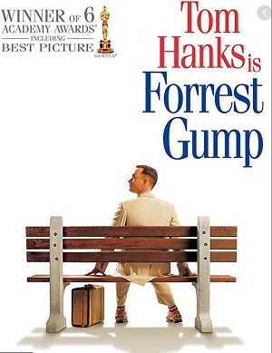

個人的オススメ映画！～ヒューマンドラマ編～
このページは個人的にオススメの映画を紹介するページです

『フォレスト・ガンプ/一期一会』（フォレスト・ガンプ いちごいちえ、Forrest Gump）は、1994年公開のアメリカ映画。人より知能指数は劣るが、純真な心を持ち、周囲の人々の協力を受けて数々の成功を収めていく"うすのろフォレスト"の半生を、アメリカの1950〜80年代の歴史を交えながら描いたヒューマンドラマ。
『最強のふたり』（さいきょうのふたり、原題: Intouchables）は、2011年のフランス映画。頸髄損傷で体が不自由な富豪と、その介護人となった貧困層の移民の若者との交流を、ときにコミカルに描いたドラマ。
『グリーンブック』（Green Book）は、2018年のアメリカ合衆国の伝記コメディ映画。ジャマイカ系アメリカ人のクラシック及びジャズピアニストであるドン"ドクター"シャーリーと、シャーリーの運転手兼ボディガードを務めたイタリア系アメリカ人の警備員トニー・ヴァレロンガによって1962年に実際に行われたアメリカ最南部を回るコンサートツアーにインスパイアされた作品である。